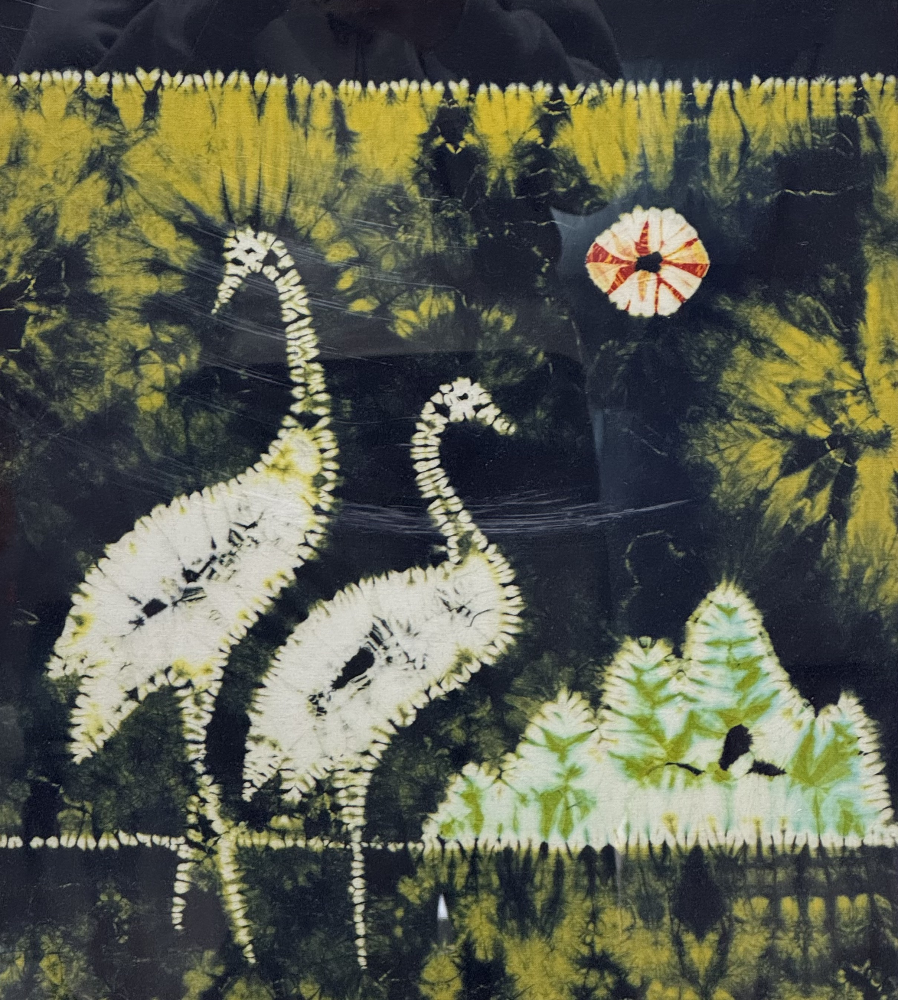

历史渊源
自贡扎染，古称“蜀缬”，起源于公元前221年的秦汉时期。在唐代，扎染技艺得到了普遍应用，并且蜀缬（自贡扎染）成为了进入宫廷的高级织物之一。然而，在宋朝时期，由于朝廷提倡朴素，扎染工艺曾被禁止，导致其发展受到抑制。此后，扎染工艺在山区和乡间以作坊形式残存，几乎濒临失传。中华人民共和国成立后，相关部门制定了继承和发展的政策，使得扎染工艺得以恢复和传承。20世纪50年代初期，通过历代扎染艺人的研究和探索，自贡扎染形成了一套更为精细的工艺流程。
工艺特点
自贡扎染的工艺流程主要包括设计、制版、图印、扎缬、染色、固色、拆线和平整等8道工序。其独特的工艺特点体现在以下几个方面：
1.扎缬手法丰富：自贡扎染整理出绞、缝、扎、捆、撮、叠、缚、夹等数十种扎缬手法。
2.多色套染：染色从单色的简单浸染演变成复色的多次浸染，形成了色彩斑斓的效果。
3.图案设计独特：图案从中心向四周呈辐射状分布，显示出奇异的艺术效果。
4.以针代笔：制作过程如同绘画，用针代笔，用染料代替墨汁，具有表现范围广泛、严密细致、古朴大方、线条流畅的特点。
5.偶然效果强烈：每一件扎染作品都是独一无二的，由于染料的渗透和捆扎力度等因素的不同，每件作品都有细微差别。
文化价值
自贡扎染不仅是一种传统的手工技艺，还具有深厚的文化价值：
1.历史文化的载体：自贡扎染通过其图案和独特的工艺，表达了上千年的历史文化。
2.艺术价值：自贡扎染以其色彩绚丽、线条清晰、图案精巧而著称，是中国传统手工艺的标志性产品。
3.非物质文化遗产：2008年，自贡扎染被列入国家级非物质文化遗产代表性项目名录。
4.国际声誉：自贡扎染在国际上享有较高的声誉，多次获得国际博览会银奖等部级大奖。
5.文化名片：自贡扎染与龚扇、剪纸并称为自贡“小三绝”，是自贡的重要文化名片。
自贡扎染不仅是中国传统手工艺的瑰宝，也是中华民族文化的重要组成部分，其独特的工艺和深厚的文化内涵使其在国内外都具有重要的艺术和文化价值。